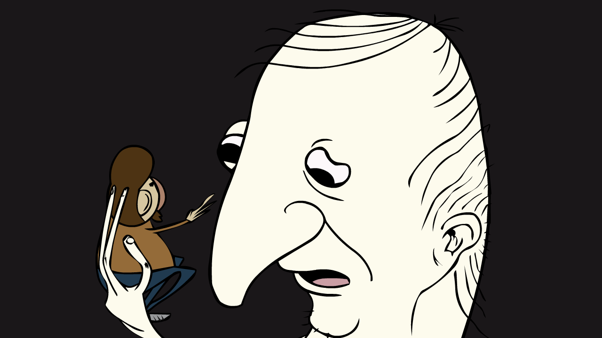
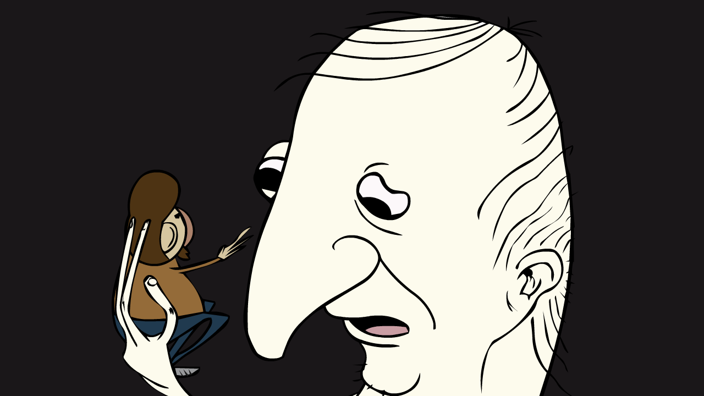
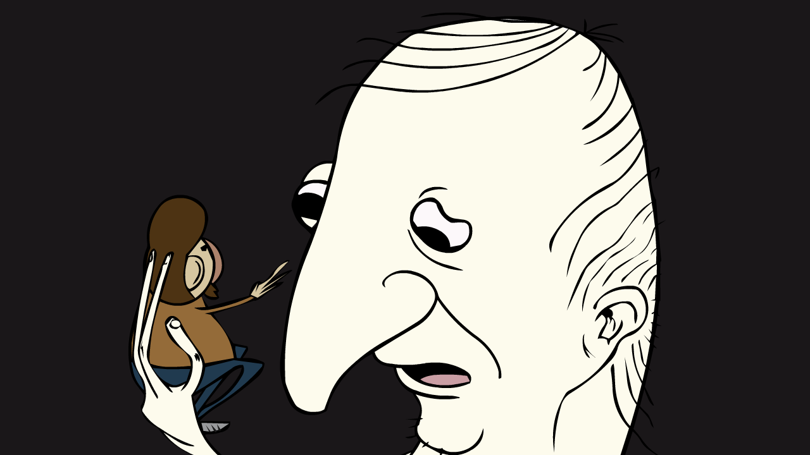

MY NAME IS TINOWL
I make stuff, here is some:

I make stuff, here is some:

Ever wonder how nothing becomes something? Well here it is. A timelapse made in classic MS Paint. Wow!
Here is the finished product.

Some real life stuff to lighten the mood.

Funny little guys